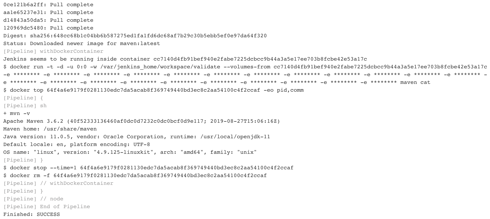

Validate Jenkins¶
That’s it! You’ve now deployed and configured a local Jenkins instance.
We’re going to run through a couple quick steps to ensure that the deployed Jenkins can launch containers as part of the pipeline.
Create a Pipeline Job¶
- From the Jenkins home page, select New Item in the lefthand navigation menu.
- Enter a name for the job. validate will do.
- Select the Pipeline job type.
- Click ok at the bottom of the screen.
Configure a Pipeline¶
- Scroll down to the Pipeline configuration section
- The Definition drop down should already be set to Jenkins Templating Engine
Important
This confirms that JTE has been installed successfully
- In the Pipeline Template text box, enter:
docker.image("maven").inside{
sh "mvn -v"
}
Note
The pipeline configured pulls the latest maven image from Docker Hub
and executes the command mvn -v within that container image.
This will validate that the local Jenkins can pull container images, run them, and then execute pipeline commands inside the launched container.

- Click Save at the bottom of the screen.
- This will redirect you back to the job’s main page. Click Build Now in the lefthand navigation menu.
- Under Build History select #1 to navigate to the build page
- In the lefthand navigation menu, select Console Output to read the build logs
- Confirm that the pipeline successfully pulled the
mavencontainer image - Confirm that the command
mvn -vexecuted successfully and shows the maven version - Validate that the build finished successfully.
If all went well, the console output should show something like:
